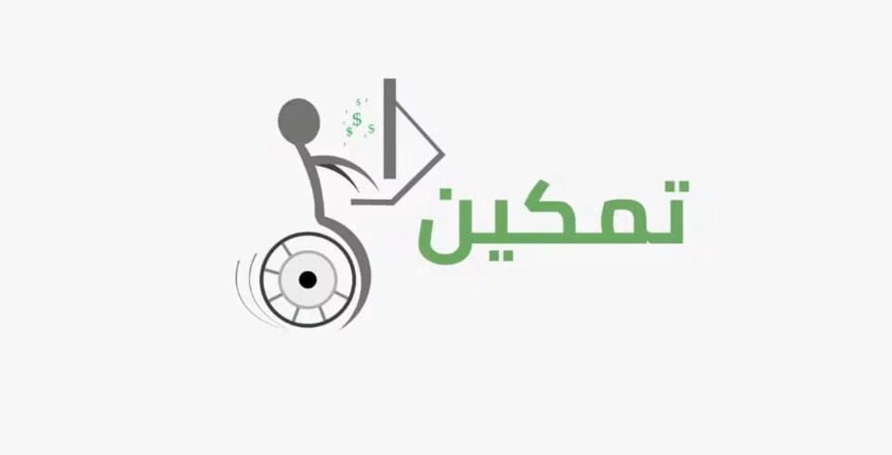
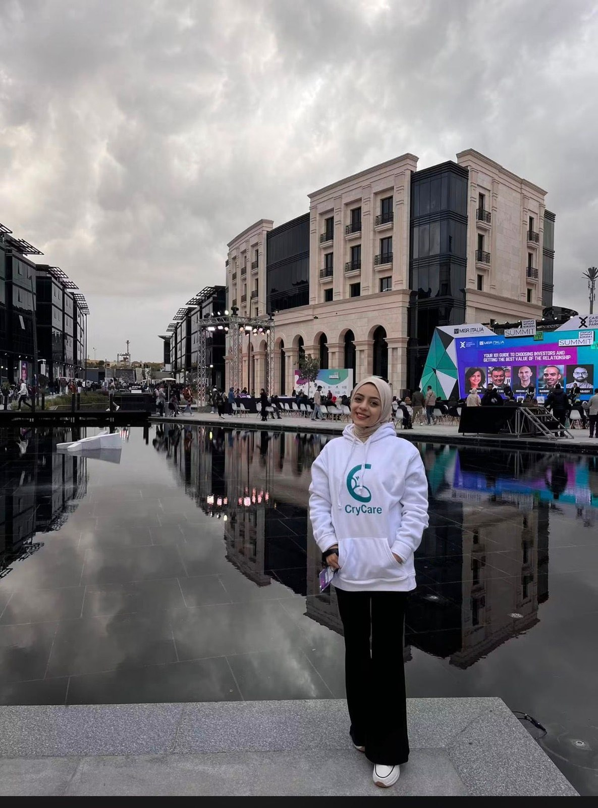

Mona
Al-Rozzi
costruisce da ciò che altri chiamano impossibile.
Da Gaza, Palestina — studia Data Science e Intelligenza Artificiale all'Università degli Studi di Napoli Federico II. Trasforma i problemi che incontra in soluzioni digitali, ancora e ancora, indipendentemente da quante volte deve ricominciare.
Ogni creatrice parte
da un punto preciso.
Una logica imparata su una scacchiera, applicata a una città assediata, poi a uno schermo.
"Ho imparato la logica, la pianificazione, la creatività e a pensare fuori dagli schemi — su una scacchiera, prima ancora di toccare un computer."
Da bambina ero molto attiva e partecipavo a ogni competizione possibile. Alle elementari sono diventata campionessa di scacchi — e gli scacchi mi hanno insegnato a pianificare diverse mosse in anticipo, a restare calma sotto pressione e a vedere una scacchiera piena di vincoli come uno spazio per la creatività, non come un limite.
Alle medie ho iniziato a portare con me la causa del mio paese. Sono diventata ambasciatrice giovanile per i bambini della Palestina nell'ambito del programma Anaileand in Belgio — per raccontare al mondo che anche noi siamo capaci, che sogniamo e che abbiamo successo, nonostante tutto ciò che viene scritto su di noi.
Crescendo, il computer è diventato qualcosa di completamente diverso: una porta d'uscita dall'assedio di Gaza. Non una fuga dalla mia realtà, ma un modo per collegarla al resto del mondo — e per iniziare a costruire.
(carica per sostituire)

Ogni progetto è stato
un modo di riflettere
un problema come soluzione.
Accessibilità, imprenditoria, narrazione e maternità — cinque progetti, un solo metodo.
(carica per sostituire)

Piattaforma per Accesso e Opportunità
Un progetto pensato per aiutare le persone con disabilità ad accedere a programmi di formazione e opportunità di lavoro — costruito attorno a ciò che realmente ostacolava l'accesso, non a una semplice checklist sull'accessibilità.
(carica per sostituire)

Piattaforma di Supporto Collettivo per Founder
Un'app che aiutava imprenditori e neolaureati in ambito tecnologico a sviluppare i loro progetti di tesi e le loro startup attraverso un modello di supporto collettivo — nata perché Mona stessa cercava un luogo capace di accogliere le proprie idee, e non lo aveva trovato.
(carica per sostituire)

Un Programma sulla Storia Rubata
Un programma narrativo sulla Palestina — su come l'occupazione riscriva la storia, ridisegni la geografia e distorca i fatti realmente accaduti sul terreno.
(carica per sostituire)

Piattaforma per Recensioni e Prestito di Libri
Una piattaforma per lettori e scrittori — per rendere più semplice recensire libri e prestarli o riceverli in prestito all'interno di una comunità di lettori.
(carica per sostituire)

CryCare
Un'app costruita attorno a ciò di cui le neomamme hanno davvero bisogno — specialmente quelle lontane da casa. CryCare traduceva il pianto di un bambino nel bisogno che rappresentava, offrendo poi soluzioni possibili, una consulenza medica on-demand in caso di emergenza e un calendario per monitorare le tappe di salute di madre e bambino. Costruita in larga parte sull'intelligenza artificiale, in un'epoca in cui gli strumenti disponibili erano molto più limitati di oggi.
Società costituita in Delaware, USA, nel 2021. Il team ha partecipato e presentato il progetto in programmi internazionali come We Make Future (Italia), Startups Without Borders (Il Cairo), COMEX (Dubai) e Station F (Gerusalemme, Palestina). Il progetto è stato lanciato in quello che sembrava il suo momento migliore — finché il genocidio a Gaza non ha portato via il progetto, il team e cinque anni di lavoro costruiti notte dopo notte per realizzarlo.
"Sono di nuovo qui, a costruire un'altra app — di nuovo per i bambini. Con il vostro supporto, arriverò all'impossibile."
Mona sta attualmente costruendo il suo prossimo progetto: una nuova app pensata per i bambini, basata su tutto ciò che ha imparato tra data science, intelligenza artificiale, marketing e cinque anni di esperienza diretta nel mondo delle startup. I dettagli stanno prendendo forma — investitori, collaboratori e altri founder sono invitati a contattarla e a seguire lo sviluppo.
Costruito in pubblico,
testato su palchi reali.
Programmi internazionali, più cinque anni di esperienza professionale a tempo pieno accanto agli studi.